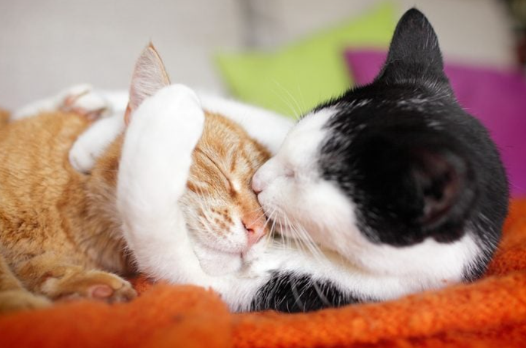

<body>

<div class="container">
  <div class="main-container">

    <div class="content-container">
      <div class="image-container">
        <h1>What Are The Fluffiest Cat & Kitten Breeds?</h1>
        
      </div>

      <div *ngIf="!isFullTextShown">
        <p>Long, luxurious fur; soft, pettable coats—there’s no denying it, fluffy kittens are the epitome of cuddly
          pets. If you’re looking to welcome one to your family, read on for a few quick tips on grooming and care, and
          a list of some breeds you may want to consider.
        </p>

        <h1> How much do long-haired cats shed?</h1>
        <p> Worried about all that fluff and where it might end up in your house? Consider this: Shorter-haired cats and
          fluffy cat breeds will both shed, and the fluff-on-your-furniture factor has less to do with shedding than
          breed.
        </p>

        <p>Some short-haired cats, like the Russian Blue, can shed as much as longer-haired varieties, like the
          Ragamuffin and Ragdoll. But in general, you can expect some cat hair to end up around your house from time to
          time. Regular grooming can help keep that at bay, however.
        </p>

        <h1>How do you groom a fluffy cat? </h1>
        <p>Regular care and grooming for your fluffy kitten can help keep hairballs at bay, keep skin healthy, and even
          become a fun ritual for you both. Here are a few tips on how to do it properly:
        </p>
        <button (click)="toggleTextDisplay()" class="show-button" mat-button>Show More</button>
      </div>

      <div *ngIf="isFullTextShown">
        <p>Long, luxurious fur; soft, pettable coats—there’s no denying it, fluffy kittens are the epitome of cuddly
          pets. If you’re looking to welcome one to your family, read on for a few quick tips on grooming and care, and
          a list of some breeds you may want to consider.
        </p>

        <h1> How much do long-haired cats shed?</h1>
        <p> Worried about all that fluff and where it might end up in your house? Consider this: Shorter-haired cats and
          fluffy cat breeds will both shed, and the fluff-on-your-furniture factor has less to do with shedding than
          breed.
        </p>

        <p>Some short-haired cats, like the Russian Blue, can shed as much as longer-haired varieties, like the
          Ragamuffin and Ragdoll. But in general, you can expect some cat hair to end up around your house from time to
          time. Regular grooming can help keep that at bay, however.
        </p>

        <h1>How do you groom a fluffy cat? </h1>
        <p>Regular care and grooming for your fluffy kitten can help keep hairballs at bay, keep skin healthy, and even
          become a fun ritual for you both. Here are a few tips on how to do it properly:
        </p>


        <ul>
          <li><b> Brush often: </b> Some long-haired and fluffy cat breeds can benefit from brushings up to 1-2 times a
            day. Regular grooming can also help you keep an eye out for injuries, pests that burrow in the fur, or skin
            conditions that might require a visit to the veterinarian.
          </li>
          <li><b> Use the right brush:</b> Make sure the brush you select is designed for cats and made to work with
            your fluffy cat’s coat type. For longer coats, you’re typically looking for slightly longer and more widely
            spaced pins or bristles.
          </li>
          <li><b> Detangle gently: </b>If you have some knots to remove, try a wide-tooth comb and work slowly. Don’t be
            afraid to enlist the help of a groomer, if needed.
          </li>
          <li><b> Brush in the direction of the fur:</b> You can also make a part on your cat’s back and tail, and brush
            down to either side to help with particularly fluffy sections.
          </li>
        </ul>
        <h1>Which fluffy cats are the most popular?</h1>
        <p> Here’s a list that’s a great place to start. Just remember that while there are a number of amazing fluffy
          cats out there, the best breed is the one that fits in with your family, personality and lifestyle.
        </p>

        <h1>1. Maine Coon</h1>
        <p> These fluffy cats lean to the larger side (12-15 pounds on average), and are notoriously friendly. They’re
          good with kids and other pets, and make excellent companions. Many even like water and enjoy the outdoors.
        </p>

        <p><i>Good to Know: That coat may be silky and dense, but grooming it is typically an easy process, thanks to
          the Maine Coon’s friendly demeanor.
        </i></p>

        <h1> 2. Munchkin</h1>
        <p> Known for their short legs, Munchkin cats can come in short- or long-haired varieties. They’re typically
          friendly, sociable, and while they rest a little lower to the ground, they can play and pounce, just like
          their long-legged counterparts.
        </p>

        <p><i> Good to Know: Some Munchkin fans call these little fluffy kittens “magpies”, as they have been known to
          borrow small, shiny objects from around the house and stash them away.

        </i></p>

        <h1> 3. Persian</h1>

        <p> Don’t be fooled. Not all Persians are the prototypical white fluffy cat. They come in many colors, and while
          they may have a reputation as the pampered type, it’s simply not the case. Calm and good-natured, they just
          generally prefer to lounge over pouncing and playing—they also make great family pets.
        </p>

        <p><i> Good to Know: Their shorter nose and face means Persians may be prone to sneeze, and their noses may
          become blocked a bit more easily than other cats.
        </i></p>

        <h1> 4. Ragdoll</h1>
        <p>Sweet, well-mannered and great with kids, Ragdoll cats are excellent for families. They even get along well
          with other pets, and are known for their breezy, laid-back attitudes.
        </p>

        <p><i> Good to Know: Calm and sweet, these cool cats get their name from their propensity to relax and go limp
          when picked up.
        </i></p>

        <h1> 5. Scottish Fold </h1>
        <p> These hardy pets come from barn cat stock, and can come in short- or long-haired varieties. They are
          typically calm and charming, choosing to bond closely with one person in their family.
        </p>

        <p><i> Good to Know: Scottish Folds are born with straight ears that won’t begin to curl until around three
          weeks.
        </i></p>

        <h1> 6. Norwegian Forest Cat </h1>
        <p> These fluffy cats are people-oriented, athletic, curious and patient. They’re also large, weighing in at up
          to 16 pounds, but don’t think that will keep them down. The Norwegian Forest cat is athletic and playful and
          loves to investigate high points in your house.
        </p>
        <p><i> Good to Know: This fluffy cat sheds its coat in the spring and fall, so plan on some extra grooming
          during this time of year.
        </i></p>

        <h1> 7. Himalayan</h1>

        <p> This breed came about as a mix between the Siamese and the Persian. They love attention and affection, and
          have a playful side, but typically don’t come across as needy. They are also calm and hardy, making them a
          great family pet.
        </p>

        <p><i> Good to Know: Similar to Persians, these cats also have shorter faces, making them prone to sneeze, and
          you may need to watch their noses to make sure they don’t become blocked.
        </i></p>

        <h1> 8. Manx</h1>

        <p> While their fur isn’t necessarily as long and silky as some others on our list, the Manx still boasts a
          commendable level of fluff. Smart and active, these cats like water, and are incredible jumpers due to their
          powerful back legs. They have also been known to get along with dogs, and make great family pets.
        </p>

        <p><i> Good to Know: That short tail can come in a variety of lengths—including rumpy, rumpy-riser, stumpy and
          longy (nope, we’re not kidding).
        </i></p>

        <h1> 9. Ragamuffin </h1>
        <p> Looking for a BIG cat? These fluffy guys can weigh up to 20 pounds. They’ve been described to have a
          puppy-like demeanor and are known for their trainable temperament. Good with kids and other animals, they make
          good family pets and lean more to the mellow side.
        </p>

        <p><i>Good to Know: The Ragamuffin is similar to the Ragdoll but is classified as a separate breed, known for a
          wider variety of colors and slightly different body type.
        </i></p>

        <h1> 10. Birman</h1>
        <p> The Birman is active, playful and intelligent, despite his somewhat stoic demeanor. He’s quieter than other
          cats, but also gentle and people-oriented, making him a wonderful family pet.
        </p>
        <p><i> Good to Know: The Birman has a long, silky coat, but its texture makes him less prone to mat than other
          long-haired varieties.
        </i></p>
        <button (click)="toggleTextDisplay()" class="show-button" mat-button>Show Less</button>
      </div>
      <h2> Cat or Kitten Breeds </h2>
      <div class="animal-grid">
        <div *ngFor="let dog of cuteDogs" class="animal-card">
          <a (click)="viewDogDetails(dog)">
            
            <h3 class="animal-name"> {{ dog.name }} </h3>
          </a>
          <hr>

          <button (click)="redirectToAnimalPage(dog)" class="animal-available" mat-button> View Adoptable Pets for This
            Breed
          </button>
        </div>
      </div>
    </div>
  </div>
</div>
</body>
